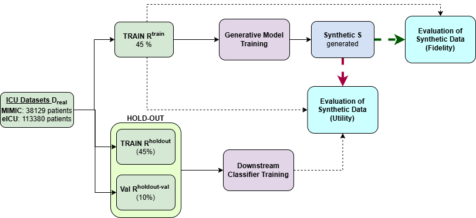

SynDAiTE Workshop · ECML PKDD 2025
Enabling Granular Subgroup Level Model Evaluations
by Generating Synthetic Medical Time Series
- 1 Institute of Data Science, Maastricht University
- 2 Department of Advanced Computing Sciences, Maastricht University
- 3 VITO, Belgium
Summary
Clinical ML models are usually evaluated on whatever real test data is available — which leaves minority subgroups with dozens of samples and wildly uncertain metrics. We show how to train generative models whose synthetic cohorts are trustworthy enough to serve as the test set itself, even for fine-grained demographic intersections.
Abstract
We present a novel framework for leveraging synthetic ICU time-series data not only to train but also to rigorously and trustworthily evaluate predictive models, both at the population level and within fine-grained demographic subgroups. Building on prior diffusion and VAE-based generators (TimeDiff, HealthGen, TimeAutoDiff), we introduce Enhanced TimeAutoDiff, which augments the latent diffusion objective with distribution-alignment penalties. We extensively benchmark all models on MIMIC-III and eICU, on 24-hour mortality and binary length-of-stay tasks. Our results show that Enhanced TimeAutoDiff reduces the gap between real-on-synthetic and real-on-real evaluation (TRTS gap) by over 70%, achieving ΔTRTS ≤ 0.014 AUROC, while preserving training utility (ΔTSTR ≈ 0.01). Crucially, for 32 intersectional subgroups, large synthetic cohorts cut subgroup-level AUROC estimation error by up to 50% relative to small real test sets, and outperform them in 72–84% of subgroups. This work provides a practical, privacy-preserving roadmap for trustworthy, granular model evaluation in critical care, enabling robust and reliable performance analysis across diverse patient populations without exposing sensitive EHR data, contributing to the overall trustworthiness of Medical AI.
Method
TimeAutoDiff splits generation into two stages: a β-VAE that compresses mixed-type time series into a latent space, and a conditional diffusion model that learns to sample from that latent space given demographic and outcome conditions. Our contribution — Enhanced TimeAutoDiff — adds a pair of distribution-alignment penalties to both stages so that evaluation on synthetic cohorts matches evaluation on real data.
-
1
β-VAE encode
A GRU autoencoder maps continuous vitals and categorical masks to a latent
zviaL_recon + β·L_KLD. -
2
Conditional latent diffusion
A bidirectional RNN denoises
zconditioned on age group, sex, ethnicity, and outcome. Classifier-free guidance balances adherence to conditions against sample diversity. -
3
Distribution-alignment penalties
Both stages are augmented with an MMD loss (RBF kernel) that aligns real and synthetic latent distributions, and a consistency loss that keeps outputs stable under small input perturbations.
The result is a generator whose synthetic ICU cohorts can stand in for real test data when evaluating a downstream predictor — even for a demographic intersection with fewer than a hundred real patients.

Subgroup-level evaluation error (Figure 7)
Mean absolute AUROC error between a downstream model's performance on small real test subsets ("Test") or synthetic cohorts, and its performance on a large ground-truth real pool. Lower is better. Averaged across all 32 age × sex × ethnicity subgroups.
Enhanced TimeAutoDiff (★) achieves the lowest error on every Data × Task.
How often does synthetic beat real-test? (Table 2)
Percentage of the 32 intersectional subgroups in which the synthetic cohort's evaluation error is strictly smaller than the small real-test subset's error. Higher is better.
| Dataset | Task | TimeAutoDiff | TimeDiff | Enhanced TimeAutoDiff |
|---|---|---|---|---|
| eICU | Mortality 24h | 48% | 60% | 76% |
| eICU | LOS > 3d | 44% | 52% | 72% |
| MIMIC-III | Mortality 24h | 68% | 68% | 84% |
| MIMIC-III | LOS > 3d | 72% | 56% | 76% |
Global evaluation utility (Figure 6)
ΔTSTR = drop in downstream performance when a model is trained on synthetic data. ΔTRTS = drop when a model trained on real data is evaluated on synthetic data. Lower is better. HealthGen is excluded from this comparison — its ΔTRTS (≈0.13–0.19) is an order of magnitude above the diffusion methods and would dominate the scale.
Subgroup Explorer
Pick any demographic intersection and see how accurately each generator's synthetic cohort reproduces the model's performance on that subgroup's large real pool. Smaller bars = smaller error = more trustworthy evaluation.
BibTeX
@misc{ibrahim2025enabling,
title = {Enabling Granular Subgroup Level Model Evaluations by Generating Synthetic Medical Time Series},
author = {Ibrahim, Mahmoud and Elen, Bart and Sun, Chang and Ertaylan, G{\"o}khan and Dumontier, Michel},
year = {2025},
eprint = {2510.19728},
archivePrefix = {arXiv},
primaryClass = {cs.LG},
howpublished = {SynDAiTE Workshop @ ECML PKDD 2025}
}